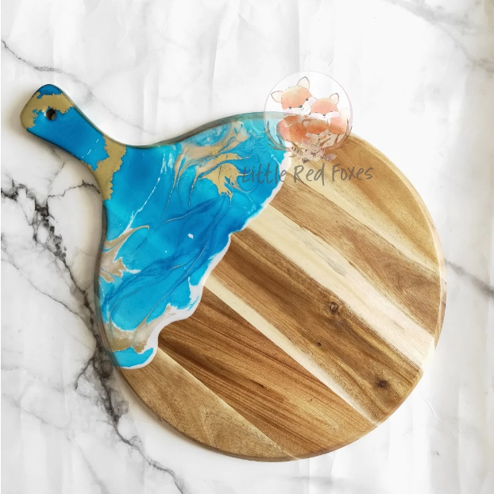
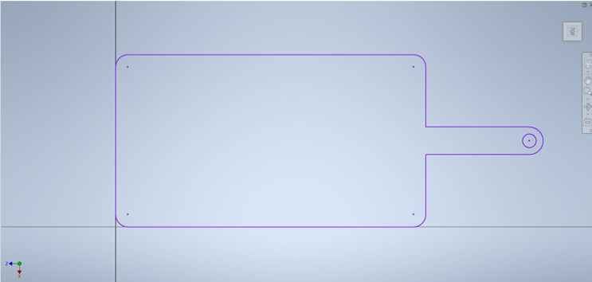
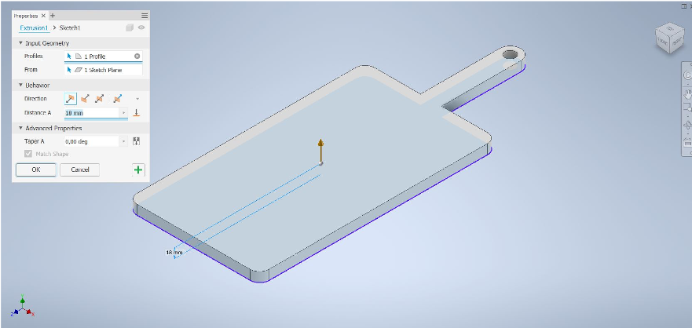
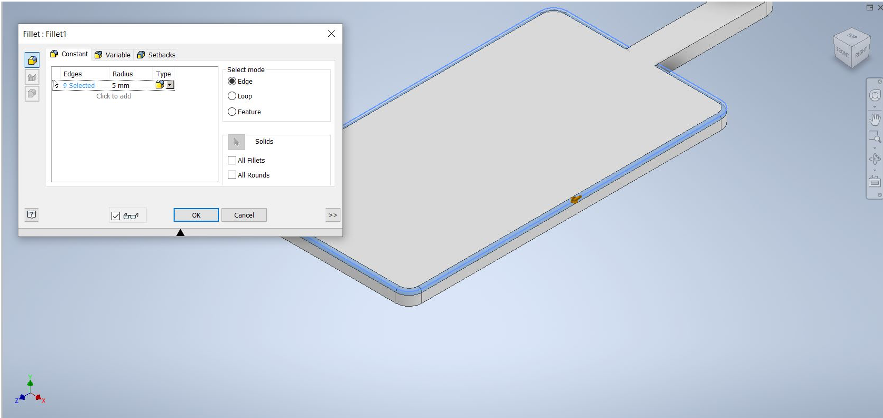
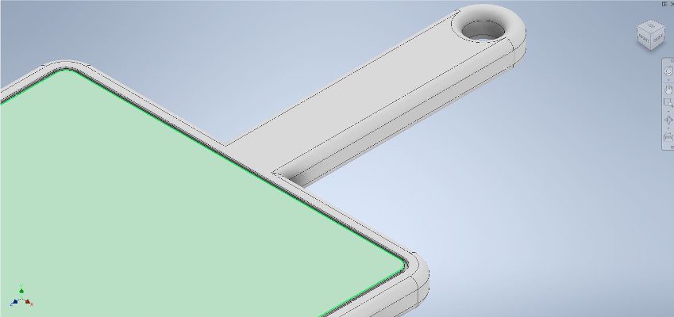
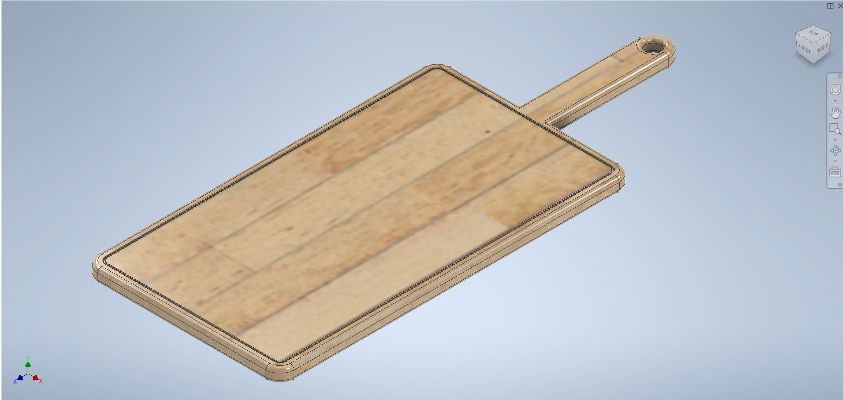
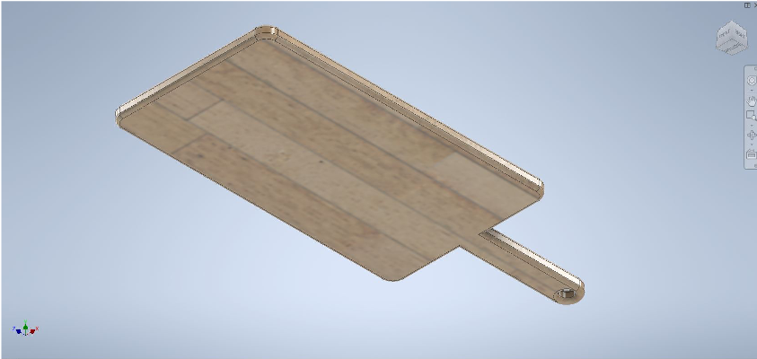
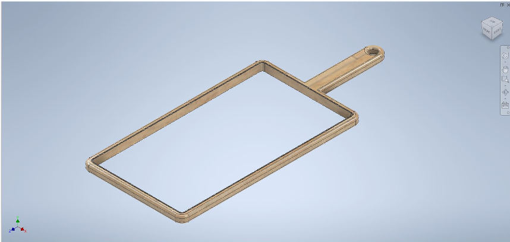
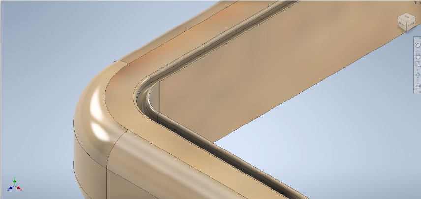
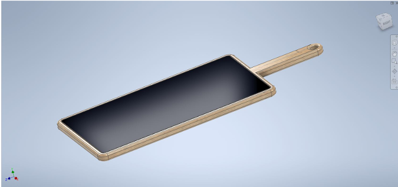

For our final project we had the idea to make a cutting board for the average joe’s kitchen.
We wanted to integrate molding with resin and computer-aided design.

The basic idea was to design something like this.
We started by drawing up a sketch in Inventor and decided it was easier to make the board rectangular.

We kept the idea to make a handle so you can hang it up on a hook or a peg. As you can see on the picture,
the corners are all filleted to get a better outlook.
It was best to have the hook hole in the first sketch to make it easily extrudable.

This wasn’t the final look however,
we still had to fillet all the edges to make it look like a more regular cutting board.

We did this to all the edges, including the inside of the hanger hole so to make it easier to hang up.
We made the fillet 5mm, which was just a number guessed upon.
Now we wanted to make a gutter in it like in some cutting boards for all the juices coming from the food sliced and diced on it.
For that we simply made a sketch and extruded it into the board,
then we filleted all the edges, also the ones on the bottom of the gutter to make it easier to clean.

Now to make it look more professional we changed the material to Maple Wood.
Here down below you can see the outcome.


You can see that the gutter is only on one side of the board.
Next it was time to cut out a filleted rectangle out of the board to make a composite in.
For that we simply made a sketch and extruded it into the existing object.


This is what we wanted to cut out of a plank of wood.
Then we just had to put an airtight bottom on the board to pour the resin in.

For a look at the final result, we drew up the resin in another part in Inventor and assembled it together with the board.
This was the outlook we wanted in the end.
For the production of it we would have taken a board of either oak or maple and cut out the rectangular shape along with the handle. The next step would have been to cut out the chunk of the board where the resin would go,
sandpaper it to make it smooth and blow all the sawdust away. Once that’s finished it’s possible to pour the resin in and wait for it to harden. Then we would have cut out the gutter in the board and sandpapered it as well.
The final step would be to lather the whole thing with oil to make the resin reflective and the wood fine.